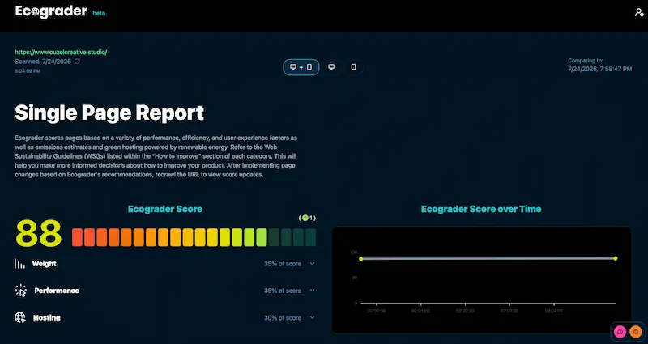

How to Build an Eco-Friendly Marketing Strategy
Part 5: Eco-Conscious Marketing
July 25, 2026
We have traveled a long road in this series. We have defined what a marketing campaign is, pulled back the curtain on the massive environmental footprint of our digital and physical worlds, and explored how the modern, purpose-driven consumer is demanding more from the brands they support.
Now, we arrive at the most important part: The How.
When we talk about sustainability, we are ultimately talking about balance. We want to manage our resources—water, energy, materials—in a smart, intentional way so that we avoid depleting the very systems that allow us to exist and thrive. In the marketing world, this means moving from awareness of the problem to the active implementation of solutions.
Whether you are managing a massive digital advertising budget or a local small business, there are concrete, actionable steps you can take right now to make your marketing eco-friendly.
The Digital Foundation: Energy and Infrastructure
Because we live in a digital-first world, our marketing lives in data centers. As we've discussed, these centers require immense amounts of electricity and water. To address this, there are two main options companies have: Green Energy and Carbon Offsetting.
- Green Energy is the gold standard. It involves using digital products and infrastructure powered directly by renewable sources like solar, wind, or hydropower.
- Carbon Offsetting is the process of compensating for your unavoidable emissions by funding projects—like reforestation—that remove carbon from the atmosphere.
While offsetting is a helpful tool, be wary of using it as an excuse to remain "business as usual." The goal should always be to move as close to 100% renewable energy as possible.
Practical Step 1: Audit and Switch Your Digital Infrastructure
If you aren't sure where your digital footprint stands, start by auditing your current tools.
- Check your hosting: Visit GreenWebFoundation.org and enter your website address. They maintain a directory of hosting providers that meet high sustainability standards.
- Grade your website: Use ecograder.com or websitecarbon.com. These tools will give you a score and an estimate of the emissions produced by every page load.

Next you’ll want to choose green alternatives. When it is time to renew your services, look for providers that prioritize the planet. For example:
- EcoSend: Email marketing that runs on 100% renewable energy.
- GreenPT: AI with data centers run on 100% renewable energy.
- GreenGeeks: Website hosting that matches every unit of power used with three times that in renewable energy.
- Stripe: When processing payments, you can choose to add a carbon-offsetting percentage for every transaction.
The High-Performance Website: Optimization as Sustainability
One of the biggest benefits of making a website more “eco-friendly" is that it will make it faster, resulting in a better ranking among search engines. By reducing the "weight" of your website, you reduce the energy required to load it and search engines often reward this with a better rating.
Practical Step 2: Lighten Your Digital Load
Improving your website's score on EcoGrader doesn't just help the planet; it significantly boosts your user experience and SEO.
- Optimize your images: Images are often the heaviest files on a page. Convert older formats like JPG or PNG into modern, lightweight formats like WEBP or AVIF. For logos and icons, use SVG.
- Implement lazy loading: Ensure your website only loads images as the user scrolls down to them, rather than loading the entire page at once.
- Be strategic with video Video is a massive resource consumer. If you must use it, use software like Handbrake or VLC to compress it, and never set it to "autoplay." Give users the choice to click play.
- Minimize third-party scripts: Every tracking pixel, haevy analytics tool, and social media widget adds weight. Consider lighter, privacy-respecting alternatives like Fathom, Plausible, or Cabin.
- Host fonts locally: Instead of calling Google Fonts every time a gage loads, download the font, convert it to a web-optimized format like WOFF2, and host it directly on your server.
- Use caching and CDNs: Utilize caching plugins (especially on WordPress) or a Content Delivery Network (CDN) to store files closer to your users, reducing the energy needed for repeated server requests.
The Proof Is in the Performance: A Case Study
We recently applied these exact principles to the Sustainable Living Association website. By prioritizing sustainable, lightweight design, we didn't just lower their footprint—we boosted their business. Sustainable design is high-performance design.
In the first three months following the redesign, they saw:
- 13% increase in traffic
- 11% increase in sessions
- 14% increase in new users
The Physical World: Eco-Conscious Print
If you are wondering who these consumers are, look no further than the current and future drivers of the global economy.
Gen Z now accounts for approximately 30% of global purchasing power. When you combine Gen Z with Millennials—those who consciously seek out eco-friendly brands and fall roughly within the age range of 16 to 43—they make up half of the adult population.
This demographic is not just a segment; they are the engine of consumption. They are the most critical, the most informed, and the most value-oriented generation we have ever seen. They are paying attention to how businesses treat the planet, and they are paying attention to how those businesses care about their future.
Gallup polls consistently show that younger generations are increasingly critical of how businesses impact the environment. For these consumers, marketing is a window into a company's soul. They are watching to see if you are a leader in the transition to a sustainable future, or if you are simply riding the wave of a trend.
The Trust Equation: Transparency vs. Greenwashing
This brings us to the most critical aspect of your brand identity: trust.
In your effort to appeal to these consumers, you may be tempted to use "green" language to make your business appear more sustainable than it actually is. This is known as greenwashing, and it is one of the most dangerous mistakes a brand can make.
If you are not authentically demonstrating your values, or if you are caught greenwashing, you risk a total loss of customer loyalty.
Building trust and loyalty requires transparency. It means being honest about what is not yet sustainable, acknowledging the challenges you face, and being clear about the steps you are taking to improve.
Surprisingly, this vulnerability is a strength. Brands that publicly disclose their carbon data or their environmental progress have experienced a 7-9% uplift in brand trust among Gen Z consumers, according to data from Microsoft Advertising. People do not expect perfection; they expect honesty and progress.
The Economic Incentive of Sustainability
While the ethical argument for eco-conscious marketing is clear, the economic argument is equally compelling. Sustainability is not just a moral choice; it is a smart business strategy.
Despite various political and economic headwinds, investments in sustainability are rising and are projected to continue through 2026. This is because the market is moving in this direction, and the most successful companies are the ones leading the charge.
Furthermore, there is a direct link between eco-consciousness and profitability. Research from Capital One Shopping suggests that 80% of worldwide consumers are willing to pay more for eco-friendly products. Consumers are essentially placing a premium on sustainability.
When you think about your marketing, you are not just sending out messages to drive sales; you are sending out messages that define your relationship with the world and with your customers. Gen Z and Millennials are looking for brands that care about the future as much as they do.
In our final post in this series, we will provide you with the practical, alternative options and strategies that help mitigate the heavy demand on our resources, allowing you to grow your business and build a better future for the planet.
This post contains affiliate links.